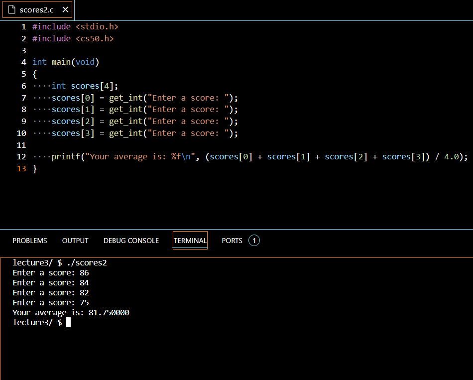

My first day diving into the wide world that is Computing Scinces. I was immensly excited to get started learning anything and everything. I started somewhere fairly simple in taking EXSM3632: Introduction to HTML. My first lesson with proffesor.Champagne was very engaging and enteractive. On our first lesson we learned about the language html and its uses, we also went over boiler plates and setting up our html documents. We practiced making our own boilerplates and we touched on what meta tags are and there uses for thigns such as SEO. From the moment our first lecture ended I knew I was hooked, I was ready to absorb all the knoledge I could. After our first lecture we were given an option project of setting up a super basic 'Hello World' html document. Overall the first day of learning html and the interaction we can make with the internet and our computers was facsinating and I was ready to learn more.
Day 2 is really like Day 5 but our second lecture didnt take place till today. I have been working on test blogs and websites using blank html but I have also been taking a look at some css intergration for any future projects I may have. These practice projects are nothing impressive, I simply used these to learn on my own time about different tags. In our lecture today we went over basic tags for adding different kinds of content, such as 'p' - paragraph, h1-9 - heading(size), img - images. We used this in a practice document to write a "news post" for a fake news journal, our prof. also gave us our first peek at our first project. The prof. showed us his intigration of designing a duplicated wiki page in html. Knowing this was going to be a future project I started coming up with scap ideas and outlines and built a couple different pages as a test as I didnt know the full perameters of the projects yet. With lecture 2 over and more information and ideas to work with I started finishing up some practice documents and looking into some more css on my own time.
So were on day 3 and I have been really looking forward to my lecture. For the last 2 days I have been messing around with implementing basic css into my practice documents. Its been more of a challange then I thought for even simple things but I have a feeling that is because I am still missing some of the core html information to understand css. In our lecture today with our project start date approaching our prof. showed us some of the rules for formating our documents and habbits to avoid in writting our html code. He also went over the history of html and webpages on the internet talking about things like how different browser engines read basic html and who makes the rules for properly written html documents. At the end of the lecture today our prof. gave some of us a chance to show some of our work and ask questions and he directed us to a website called W3C where you can find information on what differnt tags do, how to use tags, how to fix problems, and how to restyle our html documents. Overall this far in I couldnt be happier with my schooiling choice of computing science and even tho im in the very beginning stages im beyond excited to go through this journey.
So we are 2 weeks into the journey and we have been shown the outlines for our first project and let me say I am very excited to get started. For our first project we are to create a blog page for a person/organization/band basically anyone we want. I havent had long to think about it but I have a couple ideas I think will work well. Our prof. suggested we use our favourite author or musician or actor and use some other blog posts we have read for insperation on setting up our page. For my project I'm mainly thinking of doing a Breaking Benjamin fan blog page for the band Breaking Benjamin or a Supernatural fan page blog for the tv show Supernatural. I will spend the rest of tonight looking for inspiration and narrowing in on my final idea.
I have made a ton of progress in the last 2 days and I was really looking forward to our lecture today and it did not disappoint. Our prof. went over more of the history behind webpages and webdesign along with talking about how web building platforms like wix or wordpress work with html and css running the show in the background. It was a relativly short lecture compared to the other ones but we had all the information we needed we just had to work on our projects. So thats exactly what I did. We recived the rubrik for the project and I got to work using the Breaking Benjamin idea I had from before. The rubrik said we only needed one page and we hadnt really discussed linking or making multiple pages in one document so I made the decision to go all out on this one page. I used ever piece of html information I was given in and out of class for the last 2 weeks and I got a good chunk of the html outline done. Now I am just putting more ideas and section ideas on a page to refer back to so I can fill my page effectivly without over cluttering it. So thats what ill be working on for the next 5 days and im excited for my next blog post as I should be nearly done my project by then.
So before I go over our lecture from today I have to adress where I made a slight error in my project so far. Over the last week I have gotten the complete outline of the html code done and I ran it all through the W3C validator and came up with no errors or warnings. I then decided to dive into the css so I spent time laying out the page on a ms paint doc and I started putting my code into "divs" and worked on some of the basic css I could figure out on my own for the page. During out lecture our prof. showed us his example for the project he would turn in as he has been using this document as an example for all things we have learned so far. When I realized the document he was going to send in was completly black and white with all the same fonts and styles, I asked "Are we including css styling in our page?" and he replied the obvious answer "No, this is an intro to html course we are not going over css". Yeah I spent all my time, learning about css and creating div files all over my project document that no longer made sense to be there. So tonight I will be going back over my document and deleting the css page and removing all the divs. At least I have learned alot about css and I think I can figure some basic designs out on my own now even if it was not needed in this course.
Given im working on my own html projects more and more now and learning a little bit about other languages outside of html and css, I am going to just start numbering these by post and benchmark my progress in learning and projects im working on here. For the last 2 days I have been reading and learning about the structring of html documents and making sure my documents are "readable". Learning about things like the use of "main", "section", "article", "blockquote", "aside" ect to organize my documents. Our prof. also went over some of these things in lecture today and explained the importance of using properly written and structured documents so that others who may want to understand and or expand on your code can do so easily. Since completing our blog page assignment I have been working on template websites for fake companies and trying to really get an understanding of writting html documents.
For the past 5 days I have taken it upon myself to try and create a fully structed and styled website for a small buisness. I have been working on the branding and eye appealing catch along with user interaction in my websties and I am using the template website as a way to bring all the skills I have been working on together. I have most of the base html setup and in our lecture today our prof. went over linking other websites, images, sources, documents, emails, buttons and more and the timing couldnt be more perfect. After our lecture today I have been working on including other pages in my "big project" and linking them to my index "home page". After doing this for a couple months I am growing more and more confident in my ability to design and write documents on my own, as well as I learned I have the ability to learn anything on my own time when I have the disipine and the interest in what I'm learning. Our prof. recently went over our upcoming project and we were going to be doing exactly what I have been working on for the last 2 weeks just in a simpler form. Our project was to create a portfolio website for ourselves. The portfolio is supposed to include multiple pages(home, about, blog, contact, projects). So far I have abbandond my "Big project" for this school project as I know its going to take some time to do correctly and I dont want to over work my self in 2 projects and lower the quality of one or both. Thus far I have gotten my home page done and the about me as those are the most simple pages to write its just a couple heading and paragraph tags and maybe some image links. I know the hardest part to implement is going to be the auto email button, we have to create a button within our contact page that automatically pulls up the user who clicks its main email application and fills in the fields with my school email, subject of Contact For Work, and empty content field for the users message. Knowing this is going to be one of the more advanced things I have had to include in an html document I ahve decided to work on that last and focus more on the including of my school and personal projects in my projects page. Each of our pages must contain a list and an image which is a pretty easy perameter to hit concidering its a portfolio webpage. For the next while I will be working on this project and updating my progress here every once in a while.
Since my last post I have finished my portfolio page project and completed the final exam for my html course, I havent posted much inbetween the early/middle of the course to the end of the course but alot of it tword the end was stuff I had either learned on my own or was self explanitory once I was given the base knoledge I needed to build upon. I am transfering over into my introduction to CS50 course and I know this one is much more complex and also more relavent to the things I am hoping to learn and use. In order to prepare before I start my first lecture I have opened up the course and looked at some of the notes but not much as alot of it is already looking cryptic to me. Right now I am waiting for my CS lecture and I have just been working on this blog and updating my portfolio page every now and then. I am overly excited to jump into the intro to computer science course and I am counting down the days.
Okay I have a ton to go over in todays post. First off, I have just completed my first CS50 lecture and let me say I am more then enthusiastic and ready to just dive into this course from day 1. Our prof. introduced him self and explained his background in the field of computing sciecnes as well as gave each of us a chance to explain why we had taken the course and past things we had seen in relavince to CS. In our first lecture I noticed right away that it seemed much more theory based as we were starting off. We talked about things like machine code and human code, binary and how the computer reads and converts everthing to these 1s and 0s. We talked a little bit about the language we would be working wtih in our future problem sets and projects. In order to give us a very basic understanding of computer science and the way a computer interacts with a user our prof. showed us a website known as scratch designed by CS students at MIT. I have worked with scratch in the past so I knew most of what he was talking about but he went into so much more detail and made so many more connections I had never seen or thought of. As an example "program" our prof. wrote a scratch program to have the user interact with the "scratch cat" and tell the cat the users name. We were then encouraged to attempt writting our own scratch code of some kind with low complexity. After we broke to write our scatch programs some of us got to show off and display our programs to the class. After that our prof. went into the linking of scratch program to machine code or binary so the computer can read it understand it and execute what it is being asked. Making all these connections back to the user interaction with computers and explaining how computers follow instructions to the exact detail. After going over all of that our prof. showed us some games past students had made when messing around with scratch and we were then given our own time to work on a scartch game before returning back to take some final notes. This CS class is interesting and exciting to say the least and I cant wait for my next lecture so we can get started learning on some more advanced topics and languages.
For the past couple days I have just been reviewing some of the ideas we touched on in my first lecture and trying to make connections in order to understand it all a little deeper. My second lecture was today and I can tell this class is everything I was hoping for. In the second lecture our prof. went over the language c and its very basics. We talked about things like data types (ints, strings, floats, bools), variables, and how the computer reads c and how we can understand c in human english so that it is a little more readable to the average person, also known as psydo code. In order to get us started with the language of c and its uses with out over complicating everything all at once our prof. showed us the very first and the most simple program every first time programmer writes, Hello World. We looked at things like libraries and how they are folders of c code used to create things that we wouldnt usually have without writting the program our selves such as get_int or get_string in order to recive input from the user for the computer to do something with. We also went over things like the "main" function and how important it is to write everything that will run in your program in the main function. After showing us how to write the Hello World program and explaining what each line of code means and what it does we were given the chance to work on something similar without creating a replica copy of the base Hello World program our prof. had just written. I wrote mine to say "Hello world, welcome to CS50" (I will include a ss of my first ever c program below). After talking about how to print things to the console and how to interact with c our prof. went over the uses of math equasions in c and how to create variables. He showed us how to create a very very basic calculator that only had the ability to get the sum of 2 numbers. Even though this is a very simple version of a calculator it looked so complicated and didnt entirely make sense to me at first until I started writting it on my own. After messing around and writting different kinds of simple calculators I started understanding it more deeply and I felt I had a much better understanind gof what writting code and programs is and how to write very very basic thing in c. I will also include screen shots of my first ever c programs below.
In my last lecture my prof. explained things to us like intiger overflow when you try and use numbers that are to big are request to many numbers in an intiger. Intiger overflow capacity is dependent on your computers processor and memory space. an intiger uses 32 byts and can count numbers for as many as hypothetical "lightbulbs" binary space is within those byts, we can increase the size of an int(intiger) to a long(long intiger) to take the space of 64 byts so we can work with bigger numbers in our programs. We also touched on things like typecasting and changing the type of a data/value example of this can be seen in image 1 below. Using two intigers and then trying to convert them into a float variable is technically a bug as the 2 int variables will return a intiger and a float will return a float number, a float is just an intiger with a decimal point. We can change and compare types depending on their corilation so we can do things like compare an intiger to a string (we cant do things like "Hello" + 2 = ). As a practice assignment to work on until our next lecture our prof. challanged us to make an almost fully usable calculator that has to unclude 4 different operations. I know considering I have already built the very basic calculator this is not going to be to difficult and I have already started working out the problem on paper. For the next couple days this is what I will be working on and I have also started touching on some of our notes for our next lecture and I am looking forward to it as we will start to look at things like conditions which I dont fully understand yet but It seems like we will be able to do alot more then just create variables for printing and calculations.
For the last week or so since my last post I have been really narrowing in on understanding the why and how of programming and using the language c. Outside of my class again I found myself working on mini projects with the knoledge I was given so far and some of what I have read and worked on in my own time. In my last lecture my prof. discussed things like conditions(if, else, else if, while, ect) and how to practically use them in our programs. These conditions I noticed right away opened up a door to a whole new level of programming and I am eager to get started with it. My calculator program was a success I had a few minor hicups of trying to get the computer to understand taking the users input as a mathmatical operator but after I got that figured out it was overly simple to complete. In our last lecture our teacher gave us an example of using conditional statements in a program called points. We were offered the chance to try and write the programs on our own before he showed us his solution (Image for my solution below). After giving us the time to work out the problem on our own the prof. began writting his own version of the program and I noticed mine and his were quite similar alomst identical. The program we were writting was going to take the average score over 4 school courses and tell the user whether they were doing well or needed to study more. The program was simple in its skeleton bones version but I could see this was a stepping stone into making much more complex programs using these conditional statements with things like variables, input, functions ect. For the next couple days I dont really have a project or assignment to work on so I will be spending my time messing around with conditional statements and different uses for them.
Today I have been looking at Loops in programming. Our prof. went over it a little bit explaining how to setup a loop, how and when to use a loop, and different types of loops (infinite, do while, for). I learned how to use the loop statments to bring the user of the program back to a specific point in the program based on what is happening at the time. For example I can create a program that asks the user for a number and for the amount of the number I have the computer print out Hello back to the user, or I can use it so that If I dont want a program like my calculator program to end after just one use I can use while loops to keep it going so long as the user wants/needs to use the program. Learning about the cross connection of human direction and computer understanding is facsinating, we refer to them as "smart" devices but really they are empty shells with no intelligence until given specific intelligence. I have been working on a few small side projects nothing crazy big just number guesser, calculator 2.0 and others I cant list off the top of me head now. I must say I am feeling very comfortable in this course, I feel like I really understand and have a handle on the content and information and I feel like this course has sparked a different level of curiosty in me that makes me just want to learn all the time. I have never found my self reading and writting more until entering this course. The professor is very proffesional and helpful. The course is outlined well so that I feel im not getting lost in the information rather using each piece of information as a stepping stone to the next. We have a project coming up in where we have to write a program that takes user input for a number and then it prints a "staircase" (printed #) of the size of the users input. I have a feeling I know how to write this program but I dont fully understand it. I have messed around with a few different test programs to get it to run and none of them are working so far. This is the part I love most about programming though is that it is one big puzzle and everytime you think you have a piece figured out a new one comes and pushes its way in. I will continue to work on the project until my next blog post but below I have attached some of my failed versions of this program.
Attempt 1:
Attempt 2:
Attempt 3:
So we finished up our intro to language C unit and we are starting our Arrays unit. I know a little bit about arrays from self research and reading our notes, I know that these are going to be very useful in things like Data science as well as just writting basically any program. An array is like a list and it contains multple elements sorted 0-n. I learned we can use these arrays to rewrite our scores program to store all "scores" in an array where we can access each element(score) individually within the array of "scores" (example img of this below). Arrays can also be used to simply keep our code clean and readable, instead of creating 10 different variables like score1, score2, ect we can store the score values in an array and when we want to refrence a specific score its value/variable name becomes array[i] or in this case score[0]. In my course we have started directing towards the theory behind programming and computers. I have found it all interesting but I find it hard keeping engaged when there is less student work in class and just notes. I am still enjoying the class and learning alot, I am just looking forward to diving back into the programming part of things. I have a quiz coming up going over the different things we have learned about computers, and some of the things we learned in c. I am confident I will do well on the quiz as I feel like I have already memomrized a good amount of what needs to be known. Although I am looking forward to the test to use it as a bench marker for where I am really at with my knoledge. I will update again after I get my quiz marks back and I have started on the next lesson or project.
In class our work load has slowed down quite a bit while we transfer into our algorithims unit. Due to our work load being so light I have recently taken it upon myself to learn a new language and a little more about the practical uses of programming. I decided to learn the programming language python on my own time as I have read that its the most beginner friendly language when trying to self teach. I took a 6 hour youtube course for free and learned alot about how similar programming languages are, how to write longer more complex programs, and object oriented programming. I already know these are all things my prof. will cover in the future however, I wanted to get a head start and I was feeling stuck. I felt like I had reached a capacity of learning about programming and writting programs and I figured this would be a good entry level next step to complete on my own time. I didnt fully understand the whole course and I pretty much skipped OOP as I am going to wait for my prof. to go over more advanced topics like that with us as a class. I am still having a ton of fun programming and messing around while learning about this whole new world of computers I never knew was right in front of me. With everyday passing now I feel like I am still improving little by little and I still have the ferocious drive to learn that I had in the beginning. Below I have incluced a couple of my first pyhthon programs.
In class we have just started our algorthims unit and let me just say things are quickly becoming much more complicated but at the same time alot more interesting. For the last week we have been looking at and learning about what an algorithm is different kinds of algorithims, the primary use of different kinds of algorithims, and how to write some alogrithims. I have been working with python alot on my own time and I have been only using the text console to interact with my programs. I have done a little bit of personal research on creating GUI (Graphical User Interfaces) with python and I decided in order to implement what im currently learning in class and what im personally working on, I am going to write a program to visualize the different sorting algorithms. I know this is going to be a much larger scale challange then anything I have looked at doing before but I am super excited about this project and even thought the scale is large it doesnt scare me. I have started working on the application a little bit, I basically only wrote the function for 1 sorting algorithim and started looking into how to implement pygame as a way to display visuals. Its looking a little over my head so far but getting everything to work textually on the console is working fine. I am hoping I can get this project off the ground and have something to build and expand on with in the next 2 weeks but again given the scale of the project I am not sure how long it could take. I will contniue to upload pieces of the updated code for "AlgoViewer" as I progress. Until then this is what I am going to be spending a good chunk of my time learning and working on, below is an image of the current progress I have made on this "AlogViewer" program.
So I got a little over ambitous as you probably guessed with my last post. I learned alot about different python libraires like pygame and I learned alot about implementing precise object oriented programming. So it has been worth it but I have been stuck for a while on how to fit everything in the viewable window and how to switch between options such as ascending or descending, and which algorithm you are viewing. I have put this project to the side for now and I have worked on a few smaller projects so I could get something done and learn more about the individual skills I need to put together to finish writting my AlgoViewer program. Some of the smaller side projects I have been working on recently are a few text based games (Quiz, Number guesser, Rock paper scissors, Text based adventure game) a couple of quality of life programs (Number Sorter, Passwords manager, Passwords Generator). All of these projects were fairly quick to complete and returned a satisfying output. I was able to complete most of these projects in under 2 days each just from learning and writting the programs on my own. At this point I am focusing more on repition of creating programs so I drill it in my head how to use and do different things in programming. As far as class, we have been learning about more advanced types of algorithms suchs as merge sort and intersection sort. We have also lightly touched on the real world application of solving mathmatical problems with algorithms and building our own algorithms but these are some more advacned topics we just brushed over. This far into learning computer science and programming I have to say I am farther along then I ever thought I would be and I find myself learning on the fly and always wanting to program and practice applying the things I am learning.
In this blog I dont exactly want to highlight what I am currently working on or what I am doing in class as it is all fairly close in proximity to my last post. I just wanted to take a minute and showcase my 3 biggest projects to date that were completely self written with no help of tutorials or google search. The first big project I have completed so far is this blog page, this page contains everything I have, am or will leanr as well as all the projects I have, am or will work on. This page is huge in comparison to any other html website I have built in or out of class, I have taken my entire understanding of html to write this formal blog that I am using as a benchmark refrence as well as for future employers to be able to see step by step what I have learned and what skills I have acuired. This is an on going project that will be ongoing for as long as I am learning and working in computer science. This is by far the simplisit but biggest of my major projects. I really enjoy documenting my progress and it makes it very easy to see where I was at compared to where I am at now.
The second project I would like to showcase Is my Rock Paper Scissors program. I wrote this program in C completly on my own with no help, my personal goals for this project were for myself to build a deeper understanding of object oriented programming and the interaction between user and computer using the console. This project was a lot of fun to build and I found myself always having things to expand on and perfect, this project started from an idea on a piece of paper then I took every key componenet I wanted to include and figured out how to build a function out for that component on my own. Through this project I learned how to store things in a class and create functions for each individual aspect of my overall program, then call all of these classes and functions in a clean and readable way that is executed properly.
The final project I am really looking forward to presenting is my AlgoViewer application. This project came to light when I started my algorithms unit in CS50 and I wanted to take the ideas I had already created and expand upon them. I had yet to build a visual program and I decided that was how I would make my algorithms unit project different from the rest. I was able to learn and understand how to use libraires like pygame, how to create functions for each component of the application, how to user the users events and interactions in the application to change and effect the out come of the application, as well as learn how to work on a wide scale and build something bigger then just a couple lines of text to the console. This project has taken the longest to complete and even though it is executable, I am still expanding and adding features and different types of sorting algorithms as I learn about more and find myself intreseted in the project again. This project means alot to me as it was one of the first ones on such a large scale I was able to understand and build almost entirley on my own. I also found my self getting stuck and blocked on this project alot more but once I was able to bring it all together and working effeicently it had the biggest pay off out of any of my current projects to date.
Those were all the projects I wanted to show case I figure ill do this every couple months and track what kind of projects I have worked on and how the complexity of them has increased, not only the complexity but the efficency of building and writting programs.
To update on how my classes have been going and what we have been working on most recently, we have been expanding on the use of algorithms and various things like matrixs and hashmaps. Personally I have been working on building a stand alone version of the Binary search algorithm in python in order to learn how to later implement it in my AlgoViewer application. I have shown some of my simpler projects to my proffesor in order to recive feed back on the basic structure of my programs before I decide to show case any of my personal larger scale projects. I am really proud of my accomplishments thus far and I am always learning new things finding new ideas and concepts to try and build. The market for programs and software and hardware and whatever else you can think of are basically endless once you fully understand computing science. Given I dont fully understand computer science I am still in the fun crawling steps of learning the large world of computer science. Our next unit is going to be computer componenets and I have been doing some personal research on the programming and designing of hardware. I have been looking at getting a rasberryPi to practice working on more physical hardware type of engineering. I think this might still be a little out of my knoledge range but I am really excited to know that these are all gates that open up when you truly understand the connection between human instruction and maching understanding.
Just a personal update as there isnt much changing in my course cariculum right now outside of finishing up the alogirthms unit and taking the test. Recently I have come across a website known as leetCode, for any of you who do not know leetCode is a website that offers free practice problems for various types of programming with support for a ton of different programming languages. I am going to be honest I dont fully understand how leetCode problems work. I have solved a couple such as the Twosum problem and the merge two sorted list problem. Coming across this page kind of feels like a gold mine because it is a good way to see my level of understanding up to this point and it tracks which problems you have already completed so there is always progress being marked when you work on or complete a problem. I have looked at quite a few of the easy problems and attempted them but the answers arent quite as simple as what I thought they would be. I can see myself getting lost solving these problems in the future and its a fun thing to do on the side every now and then but my main go to for programming work and project ideas will be from my corses and my profs. Writting code and memorizing the different data types, structures, algorithms, ect is starting to become much easier and almost second nature, when I have a simple idea for a project I find it much easier to just open up PyCharm or VScode and work the problem out from my head, where I used to have to write it all out on paper and work through each bit individually. I also have noticed that over the time my need to google anything and everything is slowly dissapating and I am able to figure problems out on my own now. Having hands on experince and being able to visably see the progress is making it really motivating to keep going and keep pushing to learn new things as there are so many endless possibilites for areas of study in this field. I dont have any ideas for any big projects currently but Im sure my class will offer a project or an idea here soon with some new pieces of information coming in. By my next post I should be done my algorithms test which I am still a little iffy on but I am sure I will pass farily easily. After that we are actually starting out componenets of a computer unit and its sparking more and more of an interest in hardware coding with things like the raspberryPi. I am waiting to see what the unit actually looks like and other options for hardware programming before investing in something like that just to have it be a little over my head.
Before I go over what I have started in my new CS unit I would like to quickly review a project I have just finished. I was working on an email splitter that had the ability to take any number of emails, split the names from the email tag (@xxxx.com) and return it as a list to the user of names. This project was a lot of fun to work on and it was to over complicated, it gave me a chance to mess around with the os functions in python such as (open, read, write) ect. The project isnt all that impressive but It can be actually useful and really didnt take that long to plan and program out. Below I have attached a snippet of the code for this program. I have alos gotten much better at focusing on Object Oriented Programming and it has allowed me to understand my code much easier when I go back to it so I have to say that is starting to feel like a must and I am sure in a team envrioment it is. In my introduction to CS course we have been looking at computer memory, exploring the restrictions of memory. Using an example of an image, the computer is taking the information given in bytes in binary code (1s and 0s) and based on how much dedicated memory the computer has for the image it can store more and more or vise versa less and less pixels in an image (Low resolution/High resolution). The machine code understands and prints colors through the use of either a RGB tuple value or a #code. Example of RGB tuple Purple = (125, 0, 255) rgb is in the range of 0-255. Hexadecimal is another form of machine code and it is read in memory storing adresses of memory in a range of 00-9 then 0A-F (00, 01, 02, 03, 04, 05, 06, 07, 08, 09, 0A, 0B, 0C, 0D, 0E, 0F, 10, 11, 12, 13, 14, 15, 16, 17, 18, 19, 1A ect) Hexadecimals highest possible number/adress is == FF. The components of a computer unit is so far really interesting as there is a lot more to computer memory and alot more rules and new ways to read and understand things that are almost overwhelming. I am able to keep my head above water and understand a good portion of the computer memory and interacting witt it in real world situations but I find myself studying and spending much more time reading notes in this unit rather then working on school/personal projects.
Recently I have decided to dive deeper into the software engineering side of the field and I have been looking at create more visual and interactive software/programs that can be used by more people then just myself. I have been looking at React applications and intigrating more JavaScript functionallity to my website design. JavaScript is teaching me the absolute necessity that it is to learn a range of different languages as at times they can interact with eachother and fill in the gaps the other languages are missing. This wasnt apparent to me in the beginning so I have been demoting an hour or so of each of my study sessions to learning and understanding a portion of a different language right now that being JavaScript. I have a pretty solid foundation over HTML, CSS and Python and I some what can write in C but not well, the problem is JavaScript is like a mix of HTML tags and C programming. Let me just say the complexity that goes into application building makes it obvious why most projects require a team all working on seperate pieces of the puzzle. My end goal with this software engineering advacment is to update my AlgoViewer program into a React Application. I have talked to my prof. about this task and it is a bigger one for a side project but I am sure it will look good in my profile and I am hoping taking a big bite into the world is going to force me to learn it alot more carefully and accuratley in an effiecent manner. Outside of that in class we have been working on better desining our code so that it takes less time to complete and uses the least amount of memory as possible.